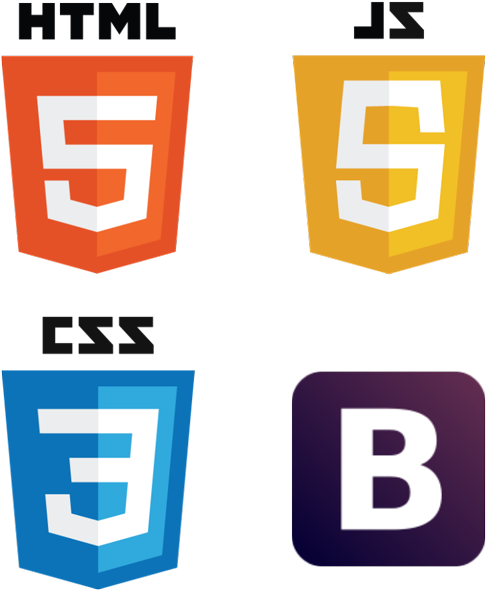
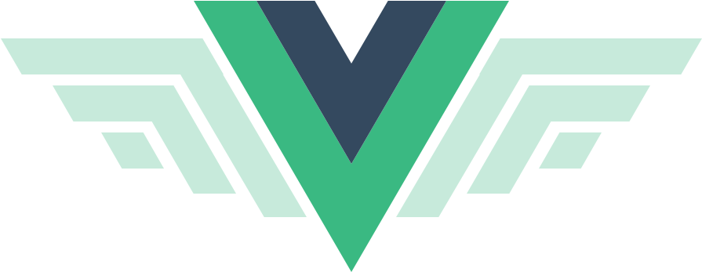

Mon Parcours
(Mon CV ici)
Diplômes et Formations
-
09/01/2021 - 05/11/2021 - Formation Développeur Web (Titre RNCP niveau 5) - OpenClassrooms - Marseille
Compétences acquises:
- Découper, assembler et intégrer tous les éléments d’une maquette graphique en HTML5 et CSS ;
- Animer les pages web avec CSS3 ;
- Appliquer les standards du web et les normes en vigueur ;
- Construire un site web fluide s’adaptant à tout type d’écran (web, smartphone et tablette) ;
- Faire réagir la page web en fonction des actions de l’utilisateur en JavaScript ;
- Se connecter à un service web pour exploiter des données tierces (API) ;
- Gérer les comptes utilisateurs ;
- Concevoir un site maintenable grâce à la gestion des erreurs et exceptions ;
- Créer, gérer et afficher le contenu d’une base de données.
-
09/2014 - 06/2016 - BTS Assistante de Gestion - VP Consult - Marseille
Expériences Professionnelles
-
11/2016 - 08/2021 - Technicienne informatique - Lauralba Conseil - Marseille
Tâches principales :
- Aider les utilisateurs en 1er niveau en sollicitant les ressources nécessaires ;
- Suivre les dossiers clients depuis l'ouverture de l'incident jusqu'à la résolution et la clôture ;
- Recenser les améliorations fonctionnelles souhaitées par les utilisateurs ;
- Diagnostiquer et corriger les dysfonctionnements décrits par les utilisateurs ;
- Réaliser l'intégration de nouveaux composants en respectant normes et standards définis ;
- Assurer la maintenance préventive ;
- Réaliser des évolutions et des mises à jour ;
- Suivre les incidents ;
Langages

